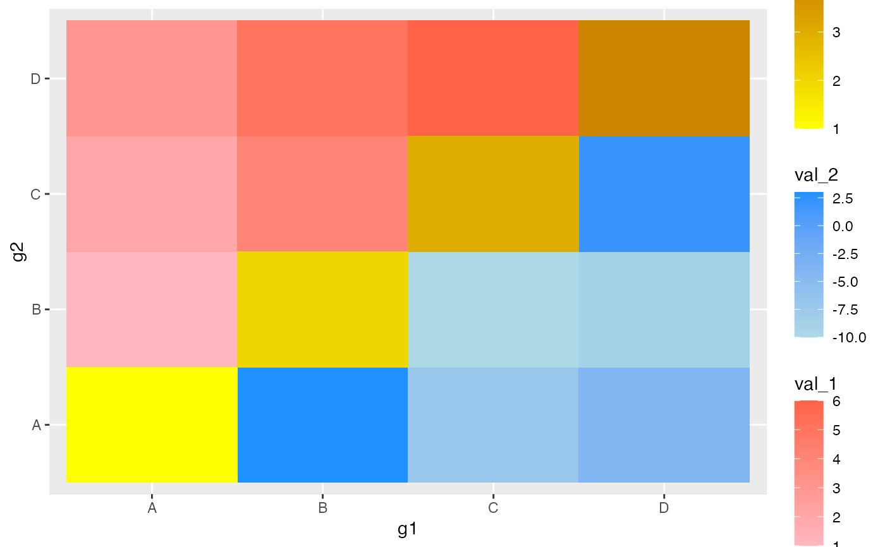
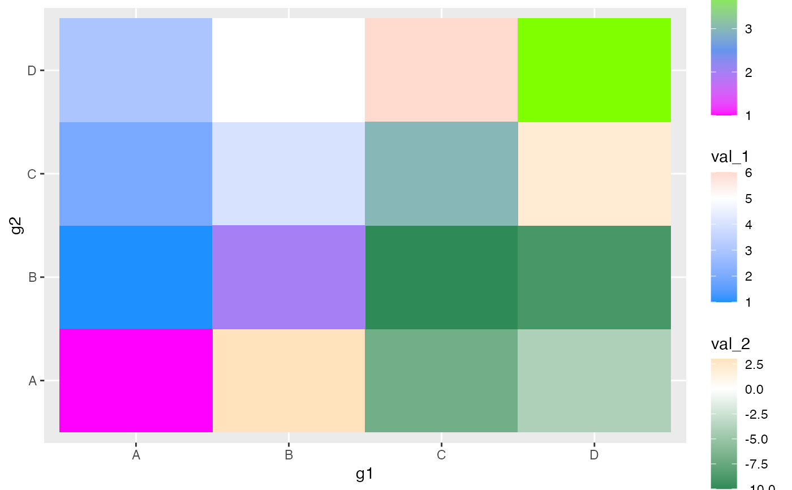
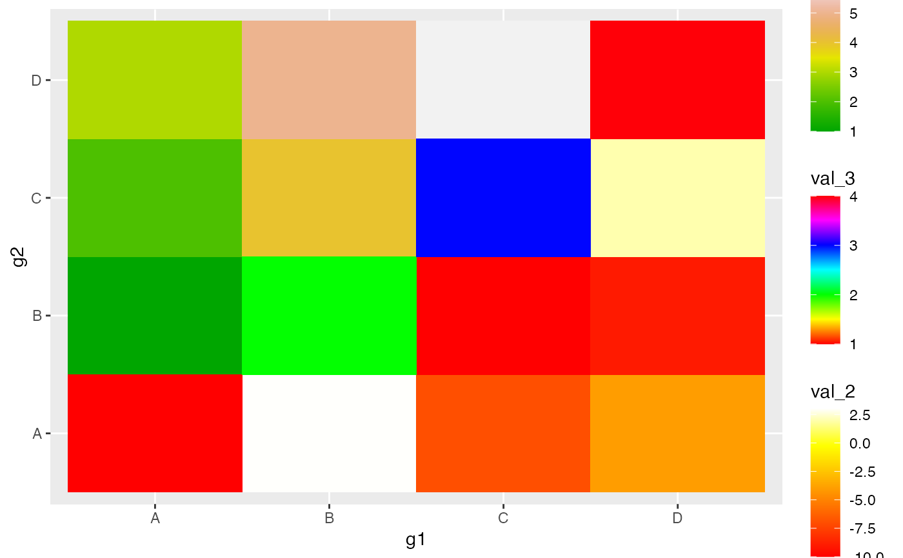
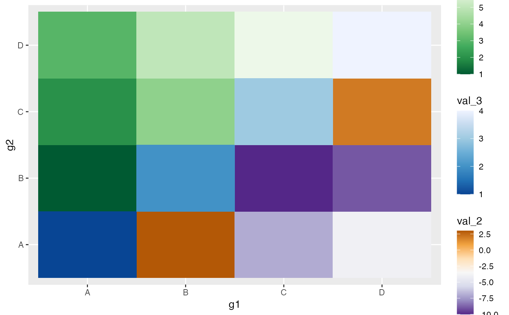

This dictates a gradient colour scheme for the top-left
(tl), bottom_right (br), or diagonal (diag)
of a geom_asymmat() geom. scale_*_tl/br_gradient()
creates a two colour gradient (low-high),
scale_*_tl/br_gradient2() creates a diverging colour gradient
(low-mid-high), scale_*_tl/br_gradientn() creates a n-colour
gradient.
scale_fill_tl_gradient(..., low = "#132B43", high = "#56B1F7", space = "Lab", na.value = "grey50", guide = "colourbar", aesthetics = "fill_tl") scale_fill_br_gradient(..., low = "#132B43", high = "#56B1F7", space = "Lab", na.value = "grey50", guide = "colourbar", aesthetics = "fill_br") scale_fill_diag_gradient(..., low = "#132B43", high = "#56B1F7", space = "Lab", na.value = "grey50", guide = "colourbar", aesthetics = "fill_diag") scale_fill_tl_gradient2(..., low = scales::muted("red"), mid = "white", high = scales::muted("blue"), midpoint = 0, space = "Lab", na.value = "grey50", guide = "colourbar", aesthetics = "fill_tl") scale_fill_br_gradient2(..., low = scales::muted("red"), mid = "white", high = scales::muted("blue"), midpoint = 0, space = "Lab", na.value = "grey50", guide = "colourbar", aesthetics = "fill_br") scale_fill_diag_gradient2(..., low = scales::muted("red"), mid = "white", high = scales::muted("blue"), midpoint = 0, space = "Lab", na.value = "grey50", guide = "colourbar", aesthetics = "fill_diag") scale_fill_tl_gradientn(..., colours, values = NULL, space = "Lab", na.value = "grey50", guide = "colourbar", aesthetics = "fill_tl", colors) scale_fill_br_gradientn(..., colours, values = NULL, space = "Lab", na.value = "grey50", guide = "colourbar", aesthetics = "fill_br", colors) scale_fill_diag_gradientn(..., colours, values = NULL, space = "Lab", na.value = "grey50", guide = "colourbar", aesthetics = "fill_diag", colors) scale_fill_tl_distiller(..., type = "seq", palette = 1, direction = -1, values = NULL, space = "Lab", na.value = "grey50", guide = "colourbar", aesthetics = "fill_tl") scale_fill_br_distiller(..., type = "seq", palette = 1, direction = -1, values = NULL, space = "Lab", na.value = "grey50", guide = "colourbar", aesthetics = "fill_br") scale_fill_diag_distiller(..., type = "seq", palette = 1, direction = -1, values = NULL, space = "Lab", na.value = "grey50", guide = "colourbar", aesthetics = "fill_diag")
| ... | arguments passed on to |
|---|---|
| low, high | the colors to represent low and high values |
| space | colour space in which to calculate gradient. Must be "Lab" - other values are deprecated. |
| na.value | color of missing ( |
| guide | Type of legend. Use "colourbar" for continuous colour bar, or "legend" for discrete colour legend. |
| aesthetics | Character string or vector of character strings listing the name(s) of the aesthetic(s) that this scale works with. For now, leave the default alone, though I plan to reinstate the standard 'ggplot2' system here, eventually. |
| mid | color for mid point (see |
| midpoint | The midpoint (in data value) of the diverging scale. Defaults to 0. |
| colours, colors | Vector of colours to use for n-colour gradient. |
| values | if colours should not be evenly positioned along the gradient
this vector gives the position (between 0 and 1) for each colour in the
colours vector. See |
| type | One of |
| palette | If a string, will use that named palette. If a number, will index into the list of palettes of appropriate type |
| direction | Sets the order of colours in the scale. If 1, the default,
colours are as output by |
library(tibble) library(ggplot2) set.seed(0) tib <- tibble(g1 = c("A", "A", "A", "B", "B", "C", "A", "B", "C", "D"), g2 = c("B", "C", "D", "C", "D", "D", "A", "B", "C", "D"), val_1 = c(1:10), val_2 = sample(-10:10, 10), val_3 = c(rep(NA, 6), 1, 2, 3, 4)) tib <- asymmetrise(tib, g1, g2) g <- ggplot(tib, aes(x = g1, y = g2)) + geom_asymmat(aes(fill_tl = val_1, fill_br = val_2, fill_diag = val_3)) g + scale_fill_tl_gradient(low = "lightpink", high = "tomato") + scale_fill_br_gradient(low = "lightblue", high = "dodgerblue") + scale_fill_diag_gradient(low = "yellow", high = "orange3")g + scale_fill_tl_gradient2(low = "dodgerblue", mid = "white", midpoint = 5, high = "tomato") + scale_fill_br_gradient2(low = "seagreen4", mid = "white", midpoint = 0, high = "orange") + scale_fill_diag_gradient2(low = "magenta", mid = "cornflowerblue", midpoint = 2.5, high = "chartreuse")g + scale_fill_tl_gradientn(colours = terrain.colors(200)) + scale_fill_br_gradientn(colours = heat.colors(200)) + scale_fill_diag_gradientn(colours = rainbow(200))g + scale_fill_tl_distiller(type = "seq", palette = "Greens") + scale_fill_br_distiller(type = "div", palette = "PuOr") + scale_fill_diag_distiller(type = "seq", palette = "Blues")